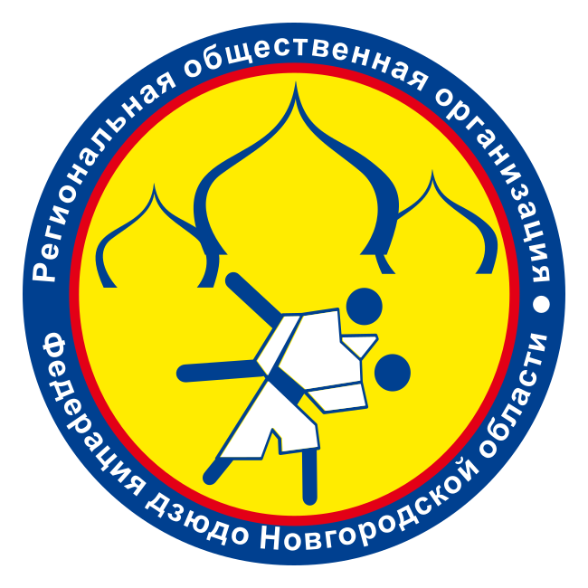
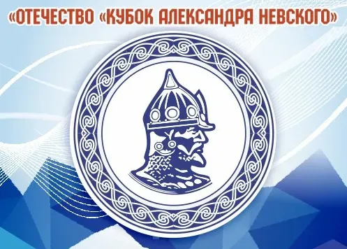
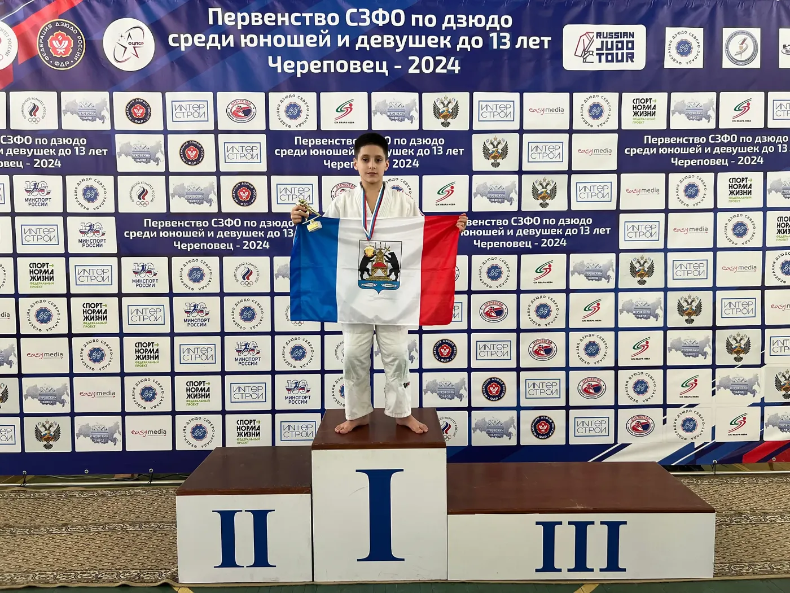
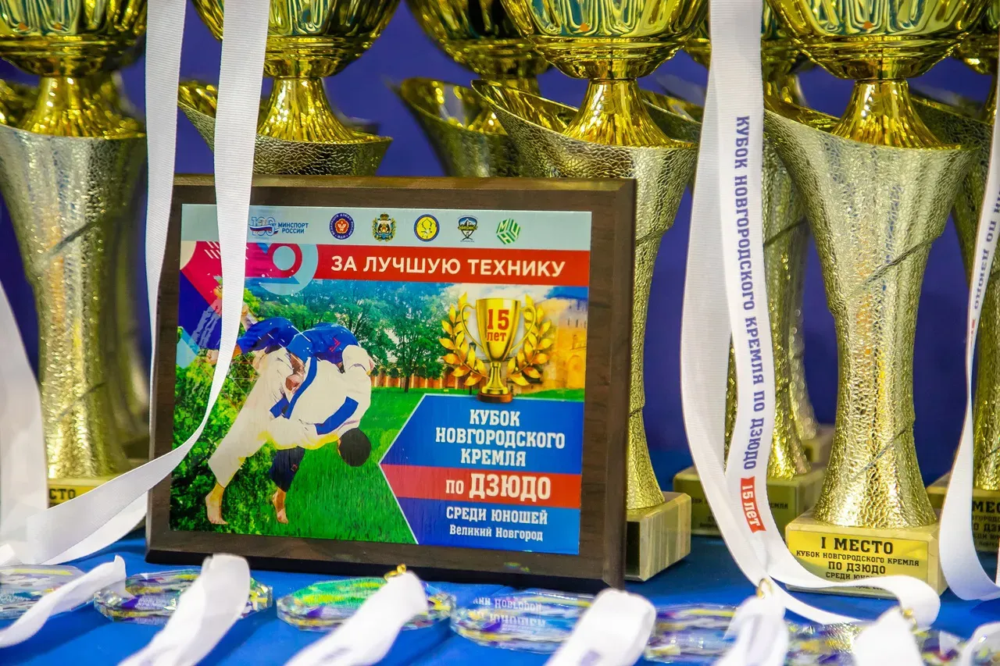
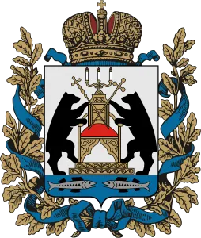
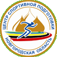
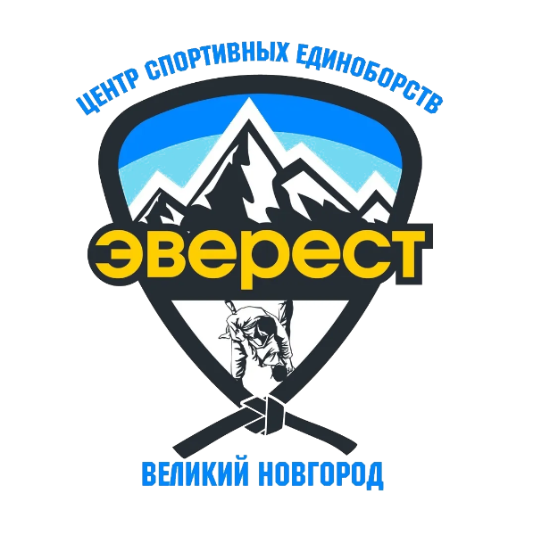
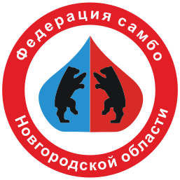

Федерация дзюдоКалендарь сезона и архив по годам: положения, протоколы и фото каждого турнира
Выберите год. Для каждого турнира — положение, протокол и фотографии, как только они появляются. План на следующий год публикуется в декабре после утверждения Министерством спорта.






